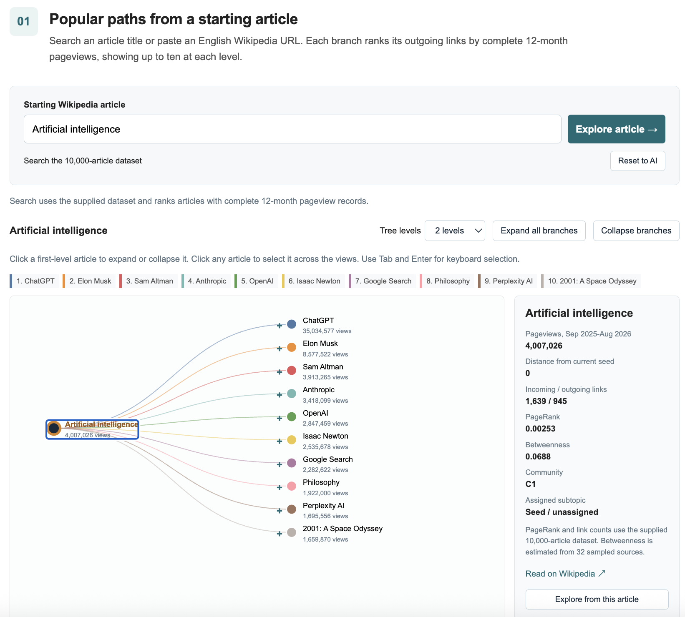
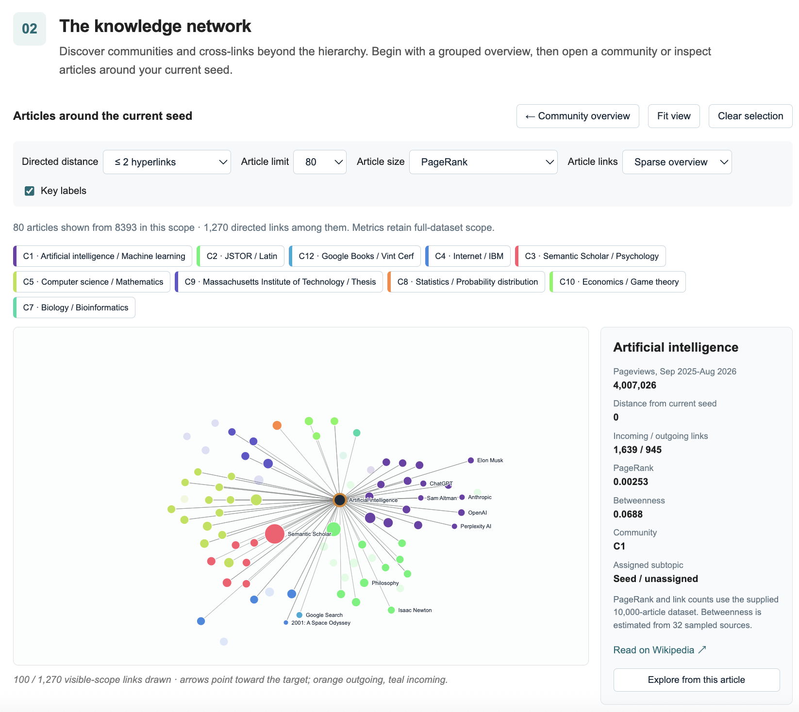
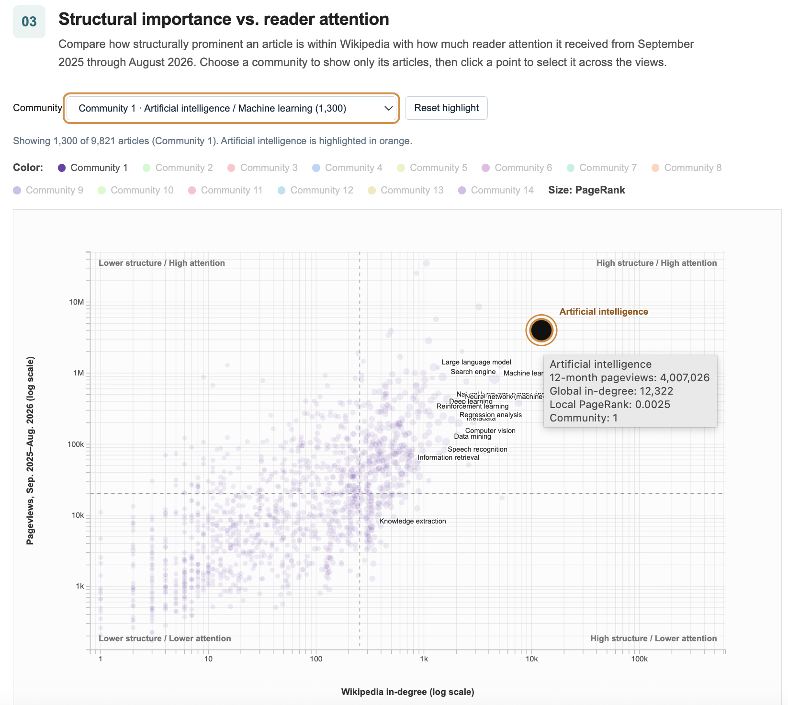
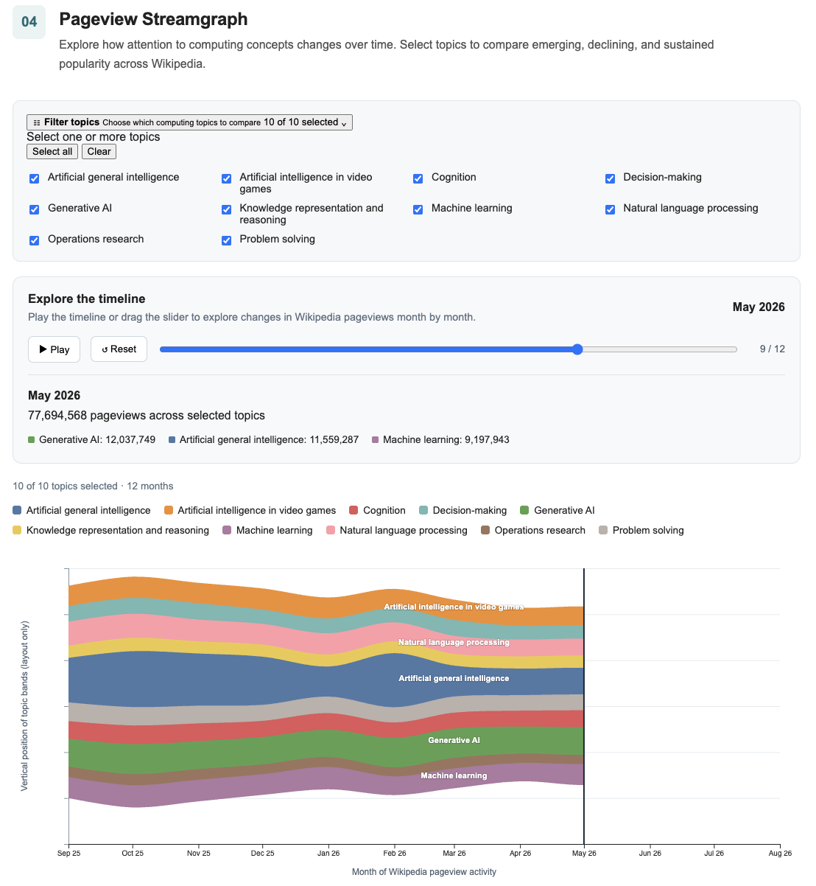
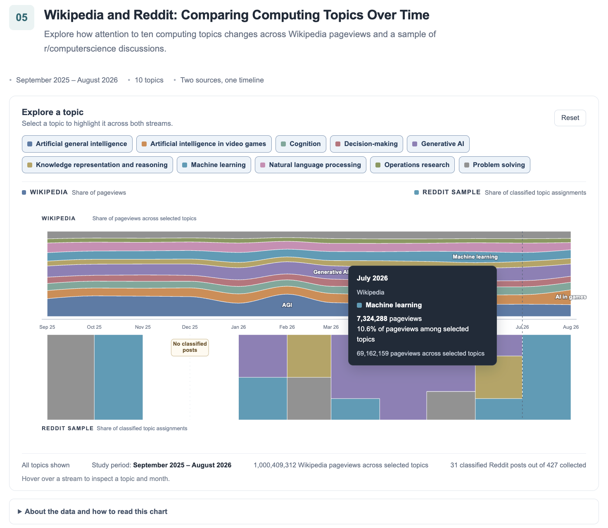
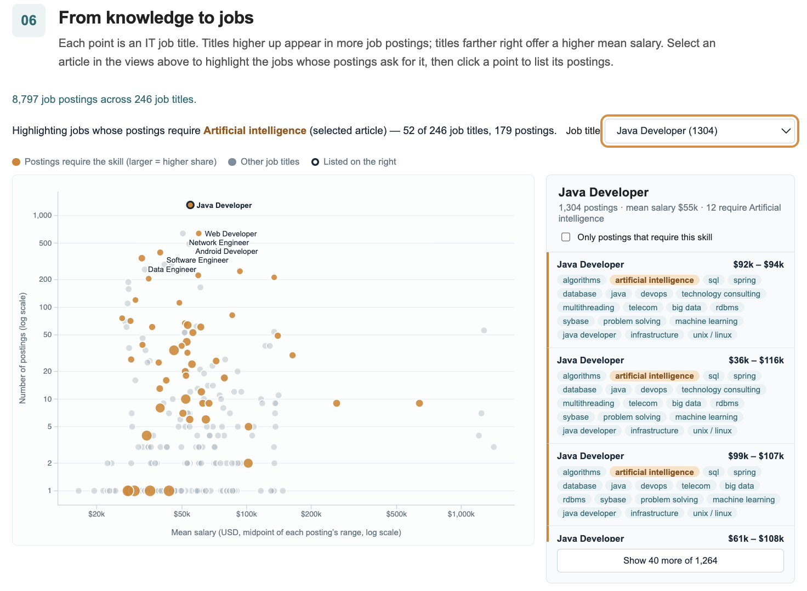

Artificial Intelligence Knowledge Map
When you enter an unfamiliar area of computing, you may need to answer several different questions: Where should I begin? Which ideas connect to one another? Which concepts are central, popular, changing over time, or useful for a career? This interactive knowledge map brings together several views to help you investigate those questions instead of relying on a single ranking of importance.
The original proposal envisioned a guided entry point for computing and emerging technologies, followed by exploration of article paths, network structure, reader attention, online discussion, and career connections. The final website follows that journey using a fixed collection of 10,000 Wikipedia articles centered on Artificial intelligence, monthly pageviews, a small collected Reddit sample, and IT job postings. You can choose another starting article within the collected corpus, but the website does not fetch new Wikipedia pages.
The tree follows popular outgoing article links, while the network reveals structural communities and reconnections. Compare reader attention with network importance in the scatterplot.
- I'm new to a topic: start with the article paths and follow related concepts.
- I want to understand connections: open the network to find communities, hubs, and cross-links.
- I want to compare importance and popularity: use the scatterplot to compare links and pageviews.
- I want to see what changes: use the timelines to explore topic attention by month and source.
- I want to connect knowledge to work: use the career view to find job titles whose postings mention a selected article as a skill.
Loading the collected Wikipedia dataset…
Dataset
Our analysis uses a fixed subset of English Wikipedia centered on Artificial intelligence, together with previously collected Wikimedia pageviews, a sample of r/computerscience posts and comments, and an IT job-postings dataset. The website uses only the collected files; searching and expanding branches do not acquire new data.
Raw Datasets
The Wikipedia source consists of article identifiers, article titles, and directed internal hyperlinks. A hyperlink records a source article linking to a target article. The collected list of exports contain 10,000 unique articles and 699,092 directed links. They represent the selected analysis corpus rather than all of Wikipedia.
The second source is monthly Wikimedia pageview data for September 2025-August 2026. It counts all-access human user requests for exact article titles, rather than unique readers. Redirect-title traffic is not combined with canonical-title traffic. Both datasets are joined internally using article IDs.
We collected r/computerscience data through the SocialCrawl API using Python, combining paginated posts from “new,” comment trees from highly commented posts, and searches for thirty computing-related terms. Request budgets and incremental saving supported resumable collection. After excluding media-only, URL-only, deleted, and removed content, we retained 604 posts and 1,051 comments, with comments drawn from 105 threads. The dataset spans May 2025-October 2026 and was exported as JSONL and CSV.
We also used Rahman et al.’s “Job Dataset for IT Professionals,” containing 8,797 postings with job titles, descriptions, skills, experience requirements, and salary ranges. Trimming whitespace reduced 254 distinct titles to 246, and requirements were parsed into skill lists. Salary bounds were standardized to thousands, and each job title’s mean salary was calculated by averaging midpoints of its postings’ salary ranges.
Processed Datasets
The cleaned node table combines titles, assigned subtopics, directed hyperlink distance, in-degree and out-degree, PageRank, estimated betweenness, detected community, and pageview coverage. These provide categorical, ordered, and numerical attributes for the visualizations.
The original collection used relevance-based selection and assigned ten subtopics. Those assignments remain available for topic comparisons. Separately, graph analysis detects 14 network communities; assigned subtopics and detected communities are different attributes.
The hierarchy is generated from the selected starting article. It displays up to ten outgoing links ranked by complete twelve-month pageviews, then up to ten links from each expanded branch. An article may occur in multiple branches when paths reconnect. Ancestors are excluded from their own branches, and tree columns represent exploration steps rather than necessarily the shortest hyperlink path.
The community overview summarizes reachable articles within the chosen distance. Article views display a bounded set of nodes and real hyperlinks between them. Sparse link drawing keeps the overview readable; selecting an article reveals its incoming and outgoing links among displayed articles.
Data Cleaning and Processing
- Article identity and integrity: article IDs provide a consistent join key. Validation found no duplicate article IDs, duplicate directed links, self-links, or missing edge endpoints in the graph.
- Directed distance: shortest outgoing hyperlink distance is calculated using breadth-first search. Original collection tiers are retained separately. Fifteen articles are unreachable from the Artificial intelligence seed; their fixed seed distance is blank rather than zero.
- Network analysis: calculated PageRank and degree values describe the complete selected graph. Communities use Louvain on its undirected projection. Directed normalized betweenness is estimated from 32 sampled source articles.
- Pageview coverage: 9,821 articles have complete twelve-month records, 177 have partial records, and two have no records. Partial annual totals remain blank; observed monthly counts remain available. Popularity ranking uses complete records only.
- Temporal aggregation: monthly article records can be combined by assigned subtopic. Group totals include reporting counts so that changing coverage can be assessed. Missing observations should not be treated as zero traffic.
- Visualization-ready export: cleaned attributes, directed edges, monthly pageviews, and compact browser adjacency are supplied alongside processing code and a data audit.
The corpus is relevance-selected and includes general subjects and biographies reached through hyperlinks. It is not a uniform or exhaustive sample of computing knowledge. Community labels name prominent example articles; they are not formal subject classifications.
Popular paths from a starting article
Begin with Artificial intelligence or search for another article in the collected corpus. Each branch ranks its outgoing links by complete 12-month pageviews, showing up to ten at each level. This creates a guided route into the topic rather than a complete list of every possible connection.
Use this view when: you want a manageable starting point or want to see how a concept leads to related topics. Try this: search for an article you recognize, expand a branch, and select an article to inspect its details and connections in the other views.
Loading articles and links…
Click a first-level article to expand or collapse it. Click any article to select it across the views. Use Tab and Enter for keyboard selection.
Tree columns show exploration steps. An article can also have a shorter hyperlink path from the seed; its shortest directed distance appears in the details. Snapshot rankings cover only articles in this collected network. Branch colors identify paths.
A popularity-structure contrast: in the collected dataset, ChatGPT received about 35.0 million pageviews and Machine learning about 838,000 during the same period. Machine learning nevertheless has higher PageRank in the selected graph. Follow an article from the tree into the network to compare these two perspectives.
From a learning path to a map of the field: the tree helps a beginner move step by step, but it simplifies a network in which one article can connect to many branches. The next view widens the lens to reveal communities, cross-links, and reconnections that a hierarchy cannot fully show.
The knowledge network
Discover communities and cross-links beyond the hierarchy. Begin with a grouped overview, then open a community or inspect articles around your current seed.
Use this view when: you want to see whether concepts belong to a wider cluster or connect across branches. Try this: open a community, adjust directed distance or article limit, then select a node to inspect its displayed incoming and outgoing links. Use the size metric control to compare different measures of structural importance.
Drag nodes; scroll to zoom; drag the background to pan. In the overview, circle area represents article count and line width represents directed cross-community link count. In article views, size represents the chosen metric; color represents a detected community. Selecting an article shows all its incoming and outgoing links among displayed articles, including links omitted from the sparse overview.
Snapshot communities use Louvain on the undirected projection of all 699,092 links. Degree and PageRank use the directed full snapshot. Betweenness uses 32 sampled sources. Overview labels name the two highest-PageRank articles in each community, rather than formal subject categories.
What counts as an important hub? Semantic Scholar and JSTOR have the highest PageRank values in this selected graph. Their prominence shows why a structurally important article need not itself be a foundational AI concept. Community and link context help interpret the ranking.
From connections to importance: the network shows how articles are positioned relative to one another, but position alone does not tell us what readers pay attention to. The scatterplot brings these perspectives together, comparing incoming links with pageviews and using point size to show PageRank.
Structural importance vs. reader attention
Compare how structurally prominent an article is within Wikipedia with how much reader attention it received from September 2025 through August 2026. Choose a community to show only its articles, then click a point to select it across the views.
<<<<<<< HEAD =======Use this view when: you want to distinguish being well-connected from receiving many pageviews. Try this: compare points above and below the median lines, filter to a community, and inspect outliers. Remember that the horizontal axis shows in-degree, while point size represents PageRank; these are related but different measures.
>>>>>>> 698f73f (Update index.html for story-telling)Each point is an article in the selected Artificial Intelligence network. Articles farther to the right receive links from more Wikipedia articles; articles higher on the chart received more pageviews. Point size represents PageRank and color represents a detected community.
Both axes use logarithmic scales because article connectivity and pageviews are strongly skewed. Dashed lines show the median values among the selected AI concepts.
Pageview Streamgraph
Explore how attention to computing concepts changes over time. Select topics to compare emerging, declining, and sustained popularity across Wikipedia.
Use this view when: you want to investigate whether attention to a topic rises, falls, or remains comparatively steady. Try this: filter to a few topics, play the timeline or move month by month, and hover over a band to inspect its value. The streamgraph emphasizes changes in the topic mix; its vertical position is not an absolute ranking.
Explore the timeline
Play the timeline or drag the slider to explore changes in Wikipedia pageviews month by month.
Loading monthly pageview data…
Each colored band represents a computing topic. Follow a band across <<<<<<< HEAD the timeline to explore changes in its monthly Wikipediapageviews. Thicker bands indicate more pageviews. Monthly pageview totals are aggregated by topic. The streamgraph uses a wiggle baseline, so vertical position is relative rather than an absolute pageview measure. ======= the timeline to explore changes in its monthly Wikipedia pageviews. Thicker bands indicate more pageviews. Monthly pageview totals are aggregated by topic. The streamgraph uses a wiggle baseline, so vertical position is relative rather than an absolute pageview measure.
From reading to discussion: pageviews show which articles receive attention on Wikipedia, but they do not show which topics people discuss in a community. The next view compares topic shares in Wikipedia pageviews with keyword-classified matches in the collected Reddit posts. This is a small, supplementary sample, so the comparison is about topic mix—not total audience size or public opinion. >>>>>>> 698f73f (Update index.html for story-telling)
Wikipedia and Reddit: Comparing Computing Topics Over Time
Explore how attention to ten computing topics changes across Wikipedia pageviews and a sample of r/computerscience discussions.
Use this view when: you want to compare which topics make up Wikipedia reading activity and the classified discussions in the collected Reddit sample. Try this: select a topic in the shared legend and compare its band across both streams. The percentages use different denominators, so compare relative topic mix—not total activity or the size of the audiences.
Hover over a stream to inspect a topic and month.
About the data and how to read this chart
Each topic keeps the same color across both streams. Band thickness represents its share within that source for the month. Wikipedia shares use pageviews across the ten selected topics; Reddit shares use classified topic assignments. These percentages have different denominators and should not be interpreted as equivalent amounts of activity.
Topic selection: Selecting or deselecting topics changes the composition of both streams. When some topics are hidden, the remaining bands are recalculated to sum to 100% of the selected topics for each source and month.
Reddit sample: We used a random sample of posts from r/computerscience to examine whether discussions in the collected sample covered the same computing topics as the Wikipedia data. Of 427 collected posts in the study period, 31 matched at least one selected topic, producing 34 topic assignments because a post can match more than one topic. The sample is small, so monthly patterns should be interpreted cautiously and not as a measure of overall Reddit interest.
Missing data: December 2025 has no classified Reddit posts. The gap represents missing classified evidence, not proof that relevant discussions did not occur.
Reddit topics were identified using keyword-based classification rules. Wikipedia pageviews and Reddit topic assignments measure different kinds of activity.
From exploring knowledge to applying it: the original project aimed to connect concepts with real-world occupations. The final implementation makes this a career-exploration view: select a Wikipedia article to highlight job titles whose postings list that skill, then inspect the postings behind a title. It does not provide the originally imagined job-search entry point or a complete map of every occupation-to-concept relationship, but it offers a practical connection between the knowledge map and employment data.
From knowledge to jobs
Each point is an IT job title. Titles higher up appear in more job postings; titles farther right have a higher mean of the listed salary-range midpoints. Select an article in the views above to highlight job titles whose postings mention it as a skill, then click a point to inspect its postings.
Use this view when: you want to explore how a concept may connect to skills named in job postings. Try this: select an article in an earlier view, compare the highlighted job titles, and click a title to inspect the supporting postings. Treat these matches as keyword-based evidence, not proof that a job requires deep knowledge of the whole Wikipedia topic.
Loading job postings…
Select a Wikipedia article above to highlight jobs that ask for it.
Data: 8,797 IT job postings from the Mendeley “Job Dataset for IT Professionals”. The vertical axis counts postings that share a job title, used as a measure of demand. A posting's salary is the midpoint of its listed range; a title's salary is the mean of its postings' midpoints. The dataset does not state a currency, so salaries are shown in US dollars. Both axes use log scales because a few titles dominate.
A posting requires an article's skill when the article's title appears as a whole word in the posting's listed skills. Qualifiers such as “(programming language)” are dropped before matching. Titles are counted as written, so spelling variants such as “Andriod Developer” remain separate.
<<<<<<< HEADFinal Project Report
Navigating Knowledge: Connecting Concepts, Communities, and Careers
Introduction
Wikipedia contains extensive information about computing, but its article-by-article format can make an unfamiliar field difficult to navigate. A beginner exploring artificial intelligence, for example, encounters many related concepts without necessarily understanding how they connect, which deserve attention, or how they relate to practical interests. Our project addresses this problem by organizing articles and their relationships into an interactive knowledge map, supplemented by Reddit discussions and job board postings.
Our intended audience is learners seeking an initial understanding of computing and emerging technologies. We ask how a topic expands through hyperlinks, which concepts occupy important network positions, and where apparently separate branches reconnect. We also examine whether structural importance corresponds to popularity, how attention changes over time, and how Wikipedia readership compares with online discussion. A career-oriented extension connects this exploration with occupations.
Visualization is appropriate because these questions involve relationships, distributions, and temporal patterns that are difficult to communicate through article lists. The views support complementary tasks: following a manageable learning path, inspecting connections, comparing importance with attention, and investigating trends. Together, they provide several ways to explore a field without requiring users to understand network analysis before beginning.
Method
We processed English Wikipedia dumps using Python, converting article text exported by WikiExtractor and hyperlink records into Parquet tables. Separate Python scripts parsed compressed SQL dumps for page links, link targets, pages, and redirects. We standardized titles, retained the main article namespace, resolved redirects, and removed duplicate links and unresolved destinations. PyArrow supported batch conversion, while DuckDB performed large joins with configurable memory limits and temporary disk storage.
Starting from Artificial Intelligence, we selected 10,000 articles across ten subtopics. Using scikit-learn, we generated TF-IDF vectors from article titles and up to 6,000 characters of opening text, ranking candidates by their similarity to the parent article (75%), seed article (10%), and global in-degree (15%). Selection alternated across branches to distribute articles among subtopics.
We constructed a directed graph containing hyperlinks between selected articles and calculated in-degree, out-degree, and PageRank. Using NetworkX, we detected Louvain communities on an undirected graph version and estimated betweenness centrality to identify potential bridges. Directed breadth-first search measured shortest hyperlink distances from the seed. Detected communities and shortest-path distances were distinguished from assigned subtopics and original selection tiers.
We collected monthly Wikimedia pageviews for September 2025 through August 2026 for each article. CSV and JSON exports supplied article attributes, edges, adjacency lists, communities, tree structures, and temporal summaries to the interface. Validation checked graph size, duplicate records, month coverage, and consistency between monthly and annual pageview totals.
We collected r/computerscience data through the SocialCrawl API using Python, combining paginated posts from “new,” comment trees from highly commented posts, and searches for thirty computing-related terms. Requests budgets and incremental saving supported resumable collection. After excluding media-only, URL-only, deleted, and removed content, we retained 604 posts and 1,051 comments, with comments drawn from 105 threads. The dataset spans May 2025-October 2026 and was exported as JSONL and CSV.
We also used Rahman et al.'s “Job Dataset for IT Professionals,” containing 8,797 postings with job titles, descriptions, skills, experience requirements, and salary ranges. Trimming whitespace reduced 254 distinct titles to 246, and requirements were parsed into skill lists. Salary bounds were standardized to thousands, and each job title's mean salary was calculated by averaging midpoints of its postings' salary ranges.
The interface uses HTML, CSS, JavaScript, and D3.js. Preprocessed CSV and JSON files support browser rendering, while consistent article identifiers enable coordinated selection, highlighting, and filtering across views.
Results
1. Seed Article Search and Hierarchal Tree
The tree establishes an entry point through an article title or Wikipedia URL. Its proposed structure displays the ten most popular connected topics, followed by another level of related topics. Users expand or collapse branches and limit depth, progressively revealing detail. It addresses how a field expands from a familiar starting concept and offers a manageable route through a much larger graph. Branching exposes candidate learning directions, although popularity-based selection can exclude less visible concepts.

2. Force Directed Knowledge Network
The network complements the tree by displaying relationships that a single-parent hierarchy cannot preserve. Articles appear as nodes and hyperlinks as edges; size and color can communicate structural importance and topic grouping. Zooming, panning, selecting nodes, and highlighting neighbors support local inspection. This view addresses hubs, bridges, clusters, and reconnections. It lets users investigate whether topics separated in the tree share articles or links.

3. Structural Important and Popularity Scatterplot
The scatterplot compares a network measure with Wikipedia pageviews, placing each article according to its structural position and reader attention. Quadrants help organize comparisons between relatively high and low values. Hover details and topic filters support identifying individual articles and investigating outliers. The question is whether highly connected or central concepts also attract substantial attention. Articles combining high importance with low attention are candidates for further exploration, but that classification depends on the selected measure and quadrant thresholds.

4. Pageview Streamgraph
The pageview streamgraph represents attention over time through colored layers whose thickness indicates pageviews for selected concepts or groups. Topic selection and filtering help users compare sustained attention with temporary increases. It addresses whether interest is stable, emerging, or declining within the observation period. Broad layers indicate larger contributions, while changing thickness reveals temporal variation.

5. Wikipedia and Reddit Comparative Streamgraph
The comparative view places Wikipedia attention above a central baseline and Reddit discussion below it. Corresponding concepts and aligned time intervals support inspecting similarities and differences between reading and discussion. Concept or subreddit filtering helps narrow the comparison. It supports investigating coincident peaks, possible timing differences, and concepts primarily in one source, subject to sampling and concept-matching limitations

6. Career Exploration Extension
The sixth view connects knowledge areas with occupations through a scatterplot mapping mean salary versus number of postings. Searching by job identifies associated topics, while searching by seed article identifies related occupations. It extends discovery toward practical learning decisions by helping users assemble areas to investigate for a career interest.

Discussion
Our design combines complementary visualizations and interactions to help users explore computing concepts, compare their importance and popularity, and understand how they connect. The data includes articles, directed links, network attributes, temporal attention measures, discussion concepts, and occupation associations. The tasks include locating concepts, exploring relationships, comparing attributes, detecting outliers, and examining change. Trees and node-link diagrams represent structure; a scatterplot supports quantitative comparison; streamgraphs communicate changing composition. Search, filtering, selection, and details on demand reduce the amount of information users must process simultaneously.
A strength is the combination of complementary views. The tree supports a focused starting path, while the graph reveals relationships omitted by hierarchical presentation. The scatterplot separates different meanings of importance, and temporal views add context beyond a single popularity ranking. Consistent concept labels and coordinated selections can help users carry questions between these representations.
The same choices introduce weaknesses. Showing only popular neighbors makes the tree manageable, but biases exploration toward already visible articles. A force-directed graph can become a dense tangle, and layout movement can disrupt the user's mental map. Cluster filtering, selective labels, restrained edge opacity, and stable positions would improve readability. Selection should retain enough surrounding context to avoid making a local neighborhood appear disconnected from the broader field.
Data limitations also constrain interpretation. Wikipedia hyperlinks are editorial associations, pageviews measure attention rather than understanding, and selected Reddit communities represent a limited discussion sample. Concept matching may merge distinct meanings, or miss synonyms. Improvements should prioritize concise annotations, metric definitions, visible quadrant thresholds, and a clear explanation of the Reddit sample size. Preserve network context during highlighting, stabilize layouts, reduce edge clutter, and check color accessibility. Future work could manually audit Reddit classifications and report accuracy against a reliable reference set.
Conclusion
The project reframes computing knowledge as something to explore through several complementary lenses. The tree offers a starting path, the network reveals relationships beyond a hierarchy, the scatterplot distinguishes structural prominence from reader attention, and the two streamgraphs show how attention and classified discussion are distributed over time. The key interpretive lesson is that these measures answer different questions: network structure is not popularity, pageviews are not understanding, and a small Reddit sample is not a measure of public opinion. Used together, the views help learners generate better questions, discover connections worth following, and decide what to investigate next. The career extension adds a practical route from knowledge areas to occupations, while requiring users to treat job-posting summaries as exploratory evidence rather than guarantees.
Roles and Responsibilities
Christine Herbst collected and cleaned all Wikipedia data used in the project, completed Visualizations 1 and 2, covering the search and hierarchical tree and the force-directed knowledge network, and was the primary coder for the interim check-in, and primary writer for the final report. Temuulen Enkhatmir collected and cleaned Reddit data and job board data used in the project, as well as completed Visualizations 3 and 6, covering the structural-importance versus popularity scatterplot and the career connection map. Audrey was the primary writer for the proposal and interim check-in, did finishing touches on the final report, and completed Visualizations 4 and 5, covering the pageview streamgraph and the Wikipedia-Reddit comparative streamgraph. All three members completed the poster.
Use the views together to make a more informed judgment. The tree helps you choose where to explore; the network shows how concepts connect beyond a single path; the scatterplot separates structural position from reader attention; the timelines show how topic shares change across months and sources; and the career view provides a practical way to inspect skills mentioned in job postings. These views address different parts of the original proposal's learner journey, but they do not produce one universal ranking of concepts. Popularity is not the same as structural importance, Reddit matches are limited and keyword-based, and job-skill matches depend on the wording in the dataset. Use each view to investigate a question, then compare its evidence with the other views before drawing a conclusion.
>>>>>>> 698f73f (Update index.html for story-telling)